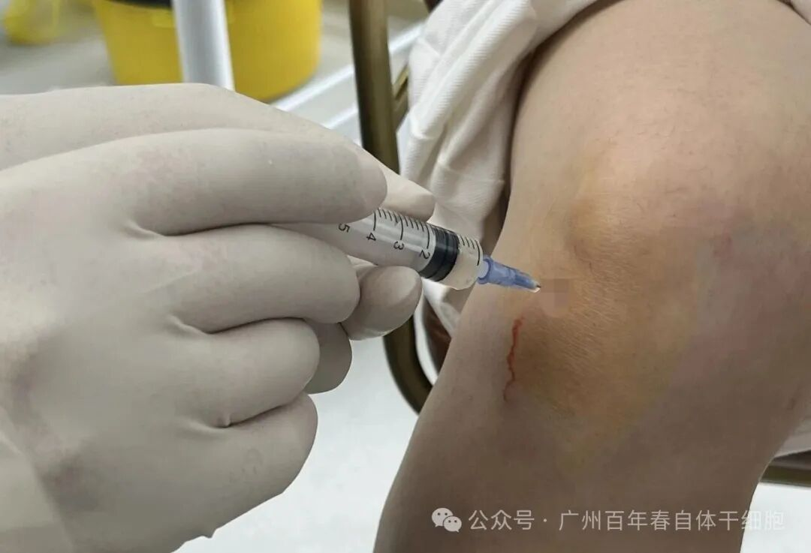
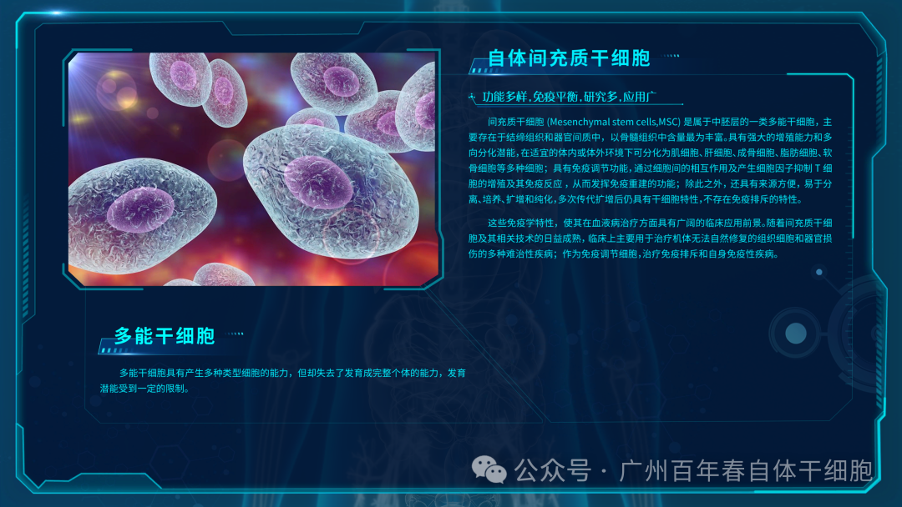
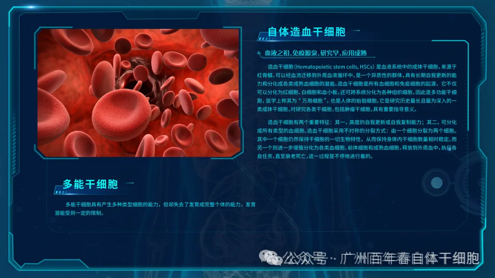
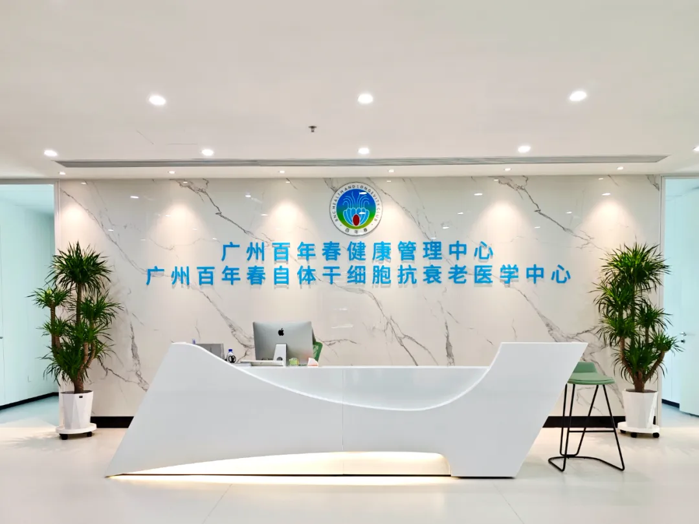
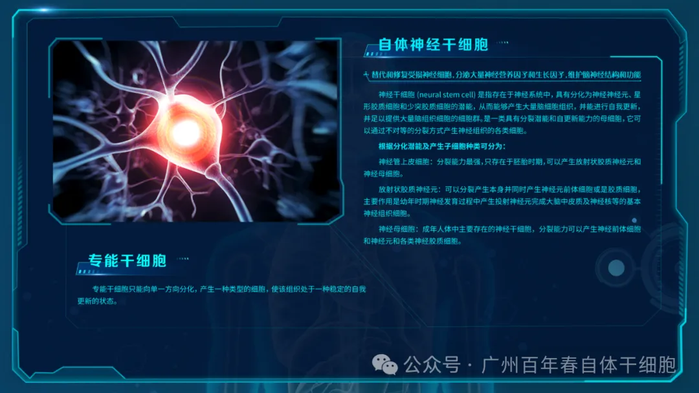
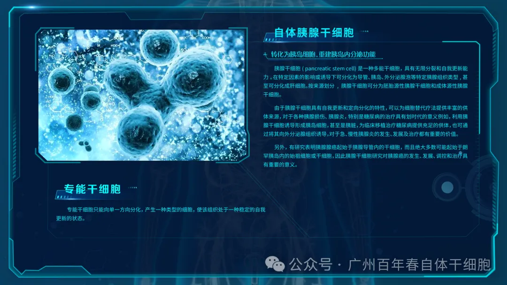
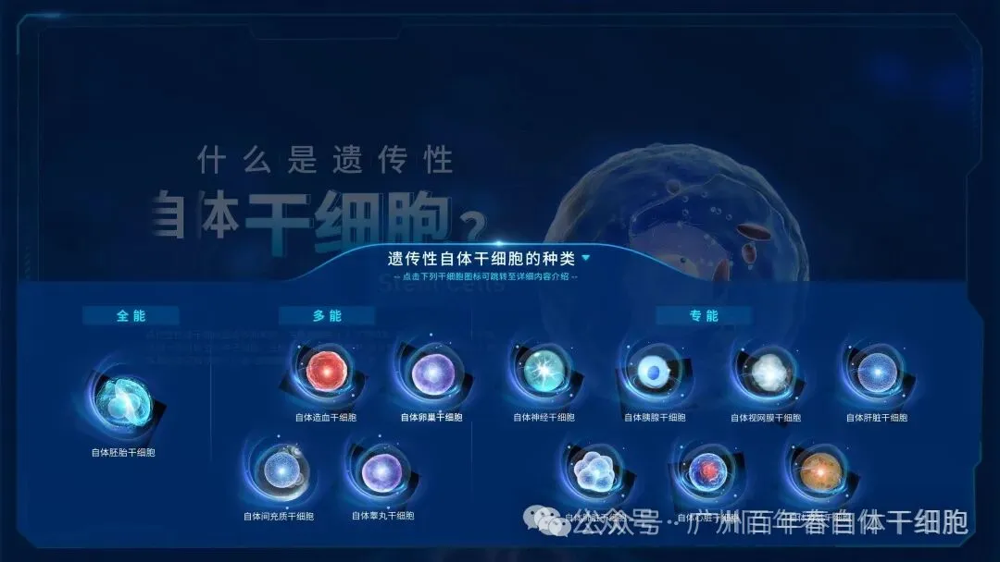

摘要
关节炎，特别是骨关节炎（Osteoarthritis, OA）和类风湿关节炎（Rheumatoid Arthritis, RA），是一类以关节软骨退行性变、滑膜炎症及骨质增生为主要特征的致残性疾病，严重影响患者的生活质量。传统治疗方法以对症治疗为主，无法逆转关节结构的损伤。近年来，以干细胞为核心的再生医学为关节炎的治疗提供了新的策略。本文旨在综述干细胞，尤其是间充质干细胞（Mesenchymal Stem Cells, MSCs）在关节炎治疗中的作用机制、临床研究进展、面临的挑战及未来发展方向。

香港客户膝盖平时走路嘎嘎响，接受百年春自体干细胞自体间充质治疗
1. 引言
关节炎是全球范围内最常见的慢性疾病之一。其中，OA以关节软骨的进行性磨损和缺失为核心病理改变，而RA则是一种自身免疫性疾病，以慢性滑膜炎和关节破坏为特征。当前的治疗方案，包括非甾体抗炎药、皮质类固醇注射、物理疗法以及最终的人工关节置换术，均旨在缓解症状而非修复或再生受损的组织。因此，开发能够从根本上修复软骨缺损和调节免疫环境的疗法成为当务之急。干细胞凭借其自我更新和多向分化潜能，被视为实现关节组织再生的理想种子细胞。

在干细胞治疗关节炎的众多方案中，自体干细胞（指从患者自身获取的干细胞，主要为间充质干细胞）展现出巨大的潜力和独特的临床价值。相较于异体（他人来源）干细胞，自体干细胞疗法具有以下几项核心优势：
1. 绝对的免疫相容性，杜绝排斥风险
这是自体干细胞最根本、最重要的优势。
· 零排异： 自体干细胞源于患者自身，其细胞表面的主要组织相容性复合体与患者自身免疫系统完全匹配。因此，当这些细胞被回输到患者关节内时，不会被免疫系统识别为“外来异物”而发起攻击。
· 安全性极高： 这意味着治疗过程中无需使用免疫抑制剂，避免了因抑制免疫系统而带来的感染、肝肾功能损伤等额外风险。治疗后的炎症反应（如关节肿胀、疼痛）通常非常轻微且短暂，主要与注射操作本身有关，而非免疫排斥。
2. 无伦理争议，来源自然
· 规避伦理困境： 与胚胎干细胞不同，自体间充质干细胞取自患者自身的成人组织（如脂肪、骨髓，外周血），不涉及胚胎的破坏，因此在伦理上被广泛接受，符合医疗伦理规范。
· 来源“天然”： 细胞来源于自身，患者从心理上更易于接受，认为这是一种更“自然”的修复方式。
3. 无疾病传播风险，安全性可控
· 杜绝交叉感染： 由于整个过程是“自取自用”，完全切断了因细胞供体可能携带的病原体（如病毒、细菌、朊病毒等）通过治疗传播给受者的风险。
· 质量可控： 细胞从获取、培养到回输的整个流程都在封闭的体系内完成，大大降低了外源污染的可能性，确保了治疗材料的安全性。
4. 来源便捷
· 脂肪来源干细胞（AD-MSCs）：通过微创的吸脂术即可获得大量脂肪组织，从中可分离出数量可观的干细胞。该过程创伤小，患者易于耐受，且细胞得率高，已成为当前热门的细胞来源。
· 骨髓来源干细胞（BM-MSCs）：通过骨髓穿刺获取，虽是微创操作，但相比吸脂术，患者的不适感可能稍强，且获得的细胞数量相对较少。
· 外周血自体干细胞：百年春自体干细胞是通过外周血利用分子生物学的基因活性调控原理采用小分子蛋白复合配方诱导成自体干细胞
应用自身血液细胞为原料细胞· “个性化”生物资源： 患者自身就是一个“移动的细胞库”，无需等待配型，随时可以启动治疗流程。

红斑狼疮患者接受自体间充质干细胞目前没有复发
3. 干细胞治疗关节炎的作用机制
干细胞治疗关节炎的疗效并非仅仅依赖于其分化为软骨细胞的能力，更多是通过其强大的旁分泌作用和免疫调节功能来实现的。
1. 免疫调节与抗炎作用： MSCs能够分泌多种免疫调节因子（如前列腺素E2、吲哚胺2,3-双加氧酶、白细胞介素-10等），抑制T淋巴细胞、B淋巴细胞和自然杀伤细胞的过度活化，同时促进抗炎性的调节性T细胞增殖。在RA和OA的炎症环境中，这一作用尤为关键，能有效“扑灭”关节内的免疫之火。
2. 旁分泌作用： MSCs分泌大量的生物活性因子，包括生长因子（如TGF-β、IGF-1）、细胞因子和外泌体。这些物质能够：
· 促进软骨修复： 刺激宿主自身软骨细胞的增殖和细胞外基质（如II型胶原和蛋白聚糖）的合成。
· 抗凋亡： 保护软骨细胞免于炎症环境诱导的凋亡。
· 促进血管生成与组织灌注： 改善软骨下骨的血液供应。
3. 归巢效应： 当干细胞通过静脉或关节腔内注射进入体内后，它们能够被受损关节部位的炎症信号（如趋化因子）所吸引，主动迁移至损伤部位，并发挥治疗作用。
4. 多向分化潜能： 在特定的微环境诱导下，MSCs能够在体内分化为软骨细胞、成骨细胞，直接参与软骨和骨的修复与再生。
５.未来研究方向包括：
· 开发基于外泌体/条件培养基的无细胞疗法，以规避细胞治疗的风险。
· 利用基因工程修饰MSCs，使其过表达特定的治疗性因子，增强疗效。
· 结合生物材料与组织工程，构建干细胞-支架复合物，为细胞提供更佳的附着和生长环境。
· 开展大规模、多中心、随机双盲的III期临床试验，为临床转化提供最高级别的循证医学证据。
6. 结论
综合来看，自体干细胞治疗关节炎的核心优势在于其卓越的安全性和完美的生物相容性。它从根本上解决了异体细胞治疗中无法回避的免疫排斥和疾病传播两大核心风险，为患者提供了一个高度个性化的、安全的再生医学治疗方案。随着细胞提取、扩增技术的不断优化和标准化，自体干细胞疗法治疗中重度关节炎的常规且有效的手段，为修复软骨缺损、缓解疼痛、改善关节功能带来持久希望。
干细胞介绍


广州百年春自体干细胞
专注于自体干细胞研发和应用转化
百年春干细胞核心技术服务
——血源性自体干细胞规模化生产专利技术
利用分子生物学的基因活性调控原理
采用小分子蛋白复合配方
应用自身血液细胞为原料细胞
百年春自体干细胞

◆ 自体造血干细胞
◆ 自体间充质干细胞
◆ 自体男性生殖干细胞
◆ 自体卵巢干细胞
◆ 自体胰腺干细胞
◆ 自体肾脏干细胞
◆ 自体神经干细胞
◆ 自体肝脏干细胞
◆ 自体心脏干细胞
◆ 自体肺脏干细胞
◆ 自体视网膜干细胞

安全应用＂六个零＂
属性安全:来源自体，无免疫排斥、无异体基因污染、无感染隐患、无致瘤风险
制备安全:整体千级的GMP洁净车间，局部百级的洁净操作空间，无微生物和其他因素污染过程安全:ISO90001质量管理体系控制下的自体干细胞操作流程细胞安全:符合中国CFDA标准，临床级干细胞质量检测和放行标准回输安全:自体干细胞不会聚集成团，无梗塞
历史安全:20年超过数万例的安全应用，无一例重大不良反应及副作用;2000年研发至今，移植术相关的继发性细菌/病毒感染率为零，传染病感染率为零，传染病交叉感染率为零，继发性肿瘤发生率为零，死亡率为零2000年研发至今，移植术相关的继发性细菌/病毒感染率为零，传染病
咨询：13417915664（同微信）

具有自我更新和分化为多种细胞类型的潜能
它们是我们身体的修复工具箱
能够替代受损组织，促进再生
自体干细胞源于自身，应用于自己，不作为药品流通
应用无交叉感染和免疫排斥，不存在安全隐患
是目前干细胞再生医学应用理想的种子细胞
与金钱储蓄不同，健康储存具有不可替代性
金钱损失尚可重新赚取，健康一旦失去，往往难以完全恢复
干细胞保养正是在健康尚存时，为身体存下一笔生命资本
这笔资本可能在对抗癌症、心脏病、糖尿病乃至神经系统疾病时发挥关键作用。
例如，造血干细胞移植已成为白血病等血液疾病的重要治疗手段；间充质干细胞则在组织修复和免疫调节中展现出广阔前景。
Good health is more important than wealth

现代人常陷入一种误区：将健康问题推迟处理，总以为“现在还年轻，等老了
这种思维方式与“先污染后治理”的发展老路如出一辙，终将付出更大代价
干细胞保养代表了一种健康观念的转变——从被动治疗转向主动预防，从事后补救变为事前投资
没有人会否认健康的重要性，但在实际生活中，健康往往被排在工作和财富之后我们拼命工作以求经济安全，却可能在这个过程中损耗了最宝贵的健康资本干细胞保养提醒我们：真正的财富不是银行里的数字，而是身体的活力和生命的质量
当然，干细胞储存并非万能钥匙，它不能保证绝对的健康，也不是唯一应该关
注的健康投资均衡饮食、适当运动、良好作息仍然是维持健康的基石
但干细胞技术为我们提供了一个前所未有的机会——在细胞层面为未来健康做准备这项技术也引发了伦理和社会讨论，这是科技进步过程中必须面对的课题。但无论如何，干细胞研究已经展现出改变医学格局的潜力，为我们管理健康提供了新的可能性。
这项技术也引发了伦理和社会讨论，这是科技进步过程中必须面对的课题。但
无论如何，干细胞研究已经展现出改变医学格局的潜力，为我们管理健康提供
在生命的长河中，健康是最应珍视的财富。储存干细胞是一种对自己和家人
的责任体现，是对生命价值的深刻理解。当我们为未来做准备时，不妨思考：
等待疾病降临后艰难筹措医疗费用，还是在健康时明智投资，保存生命的种
智者云：“预防胜于治疗。”在健康管理上，这一智慧显得尤为珍贵。让我们不再重复“非要等了生病才知道保养身体”的遗憾，而是把握现代医学提供的机遇，为长远健康投资。毕竟，拥有健康不代表拥有一切，但失去健康却可能失去所有。
储存健康，就是储存未来。在这项投资面前，任何金钱储蓄都显得相形见绌。因为最终，我们无法用金钱购买生命，却可能通过保存生命的种子——干细胞，延续健康与活力。这或许是我们能做出的最明智的长远规划。